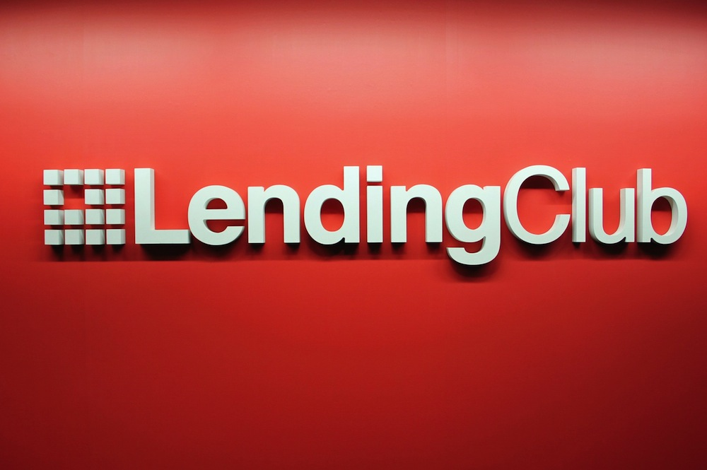
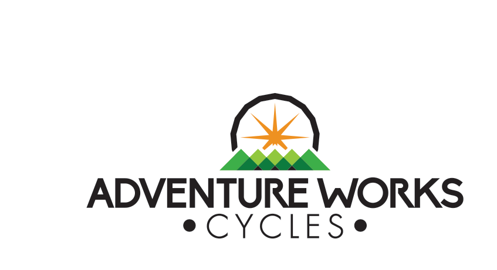
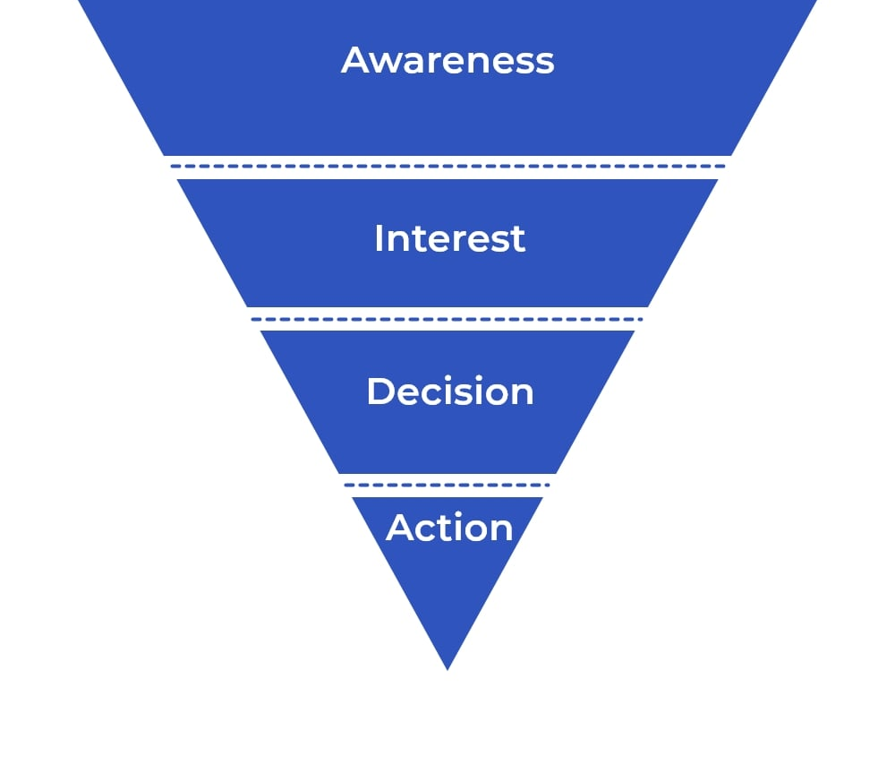

This is a project I did when joining a mentoring program. My mentor is a professional Data Analyst.
He instructed me to complete this notebook.
The objective of project is building a model to predict the probability of customer defaulting. After implementing EDA and hypothesis testing, I applied ML models and evaluated them.
This project was done in the final round of the Business Intelligence competition that I joined. I and my team
integrated about 5.5 million rows of data from multiple sources, visualized data to find insights, and finally applied
machine learning models to predict orders and optimize the distribution network.

For this project, I collaborated with my team at the university to design and build a data warehouse for a bike company.
We used SSIS to execute the ETL process and Power BI to create a dashboard.
In this project, I processed and explored the content from streaming services such as Netflix and Disney+. I
also joined data from multiple tables in a SQL database, performed the exploratory data analysis, and visualized the results.

I utilized a marketing funnel dataset from sellers that filled-in requests of contact to sell their products on Olist Store. I queried data from multiple tables
in a Google Sheet, processed data in preparation for analysis, and performed aggregations on the resulting data.
I am a big fan of Datacamp. Most of the knowledge about data I have is from Datacamp. Those are the projects I did when learning some courses. I believe that the more I practice, the better off I will be!